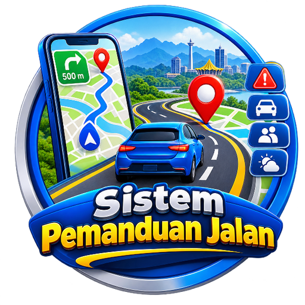

Pandu Dengan Yakin, Sampai Dengan Selamat.
Memuatkan… Buka terusSPJ memerlukan internet untuk dibuka. Selepas dibuka, peta & laluan yang telah dimuat turun terus berfungsi walaupun liputan terputus.
Buka fail index.html dan tampal URL aplikasi web SPJ (berakhir dengan /exec) pada baris URL_SPJ.